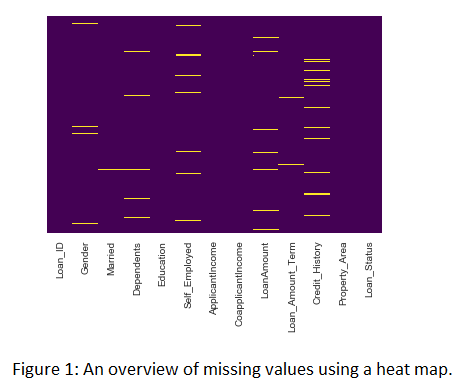
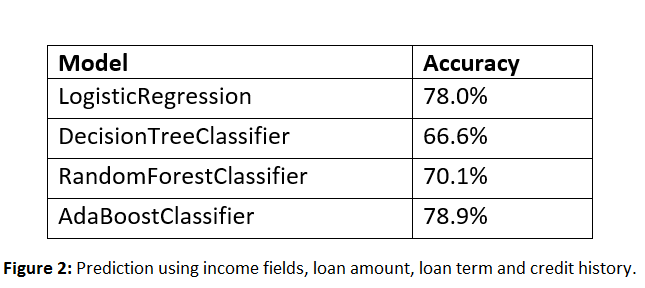
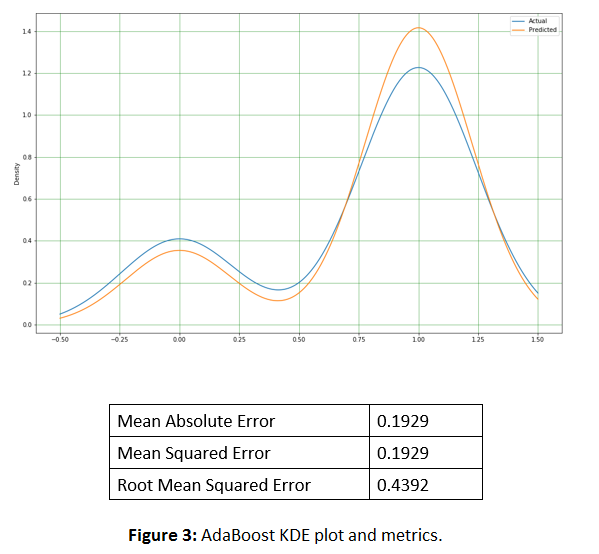

Ndcharles Nweke
Data Scientist | Teacher | Growth Marketing
An engineering graduate who is now in data science/ML. An awesome journey so far🙌. My interests are in real-life applications of data science/ML to business to tackle every day problems.
Let's Connect
LinkedIn | Twitter | Blog |
View my Resume
Loan Prediction
There are a lot of factors that affect one's ability to get a loan from a financial institution. Such factors inlude income, employment status, loan amount, loan amount term, credit history and more. Some of these attributes are crucial, while others are not. The output performance was reasonably good for AdaBoost Classifier than the others. Further analysis was also made to improve on the accuracy of the model by adding more variables and an attempt at hyperparameter tuning.
Method
A dataset consisting of 614 samples (and 13 attributes of loans) granted by XYZ, with the full set of information about the borrower, the history of payments and the outcome of the loan – received or denied – was provided. EDA was done to take a closer look at the dataset. There were missing values and no outliers. Columns with missing values >= 10 were dropped. The rest were filled using mode (categorical) and mean (numerical). Categorical values were label encoded. Loan status (Yes or No) was converted to numerical (1 or 0).
Given it's a classification problem, various classification algorithms (LogisticRegression, DecisionTreeClassifier, RandomForestClassifier and AdaBoostClassifier) were used to create a model using the relevants attributes to predict the outcome – given or not given.
[View project on GitHub]Discussions
Our first prediction used income fields, loan amount, loan term and credit history fields to train our model. The results of the models are given below:
Addition of other variables improved the results, with AdaBoostClassifier giving the best performance. Using the AdaBoostClassifier alone, to predict gave the below KDE plot and metrics. However, from the KDE output, there is the need to balance the prediction to reduce the variation between the actual and predicted values.
[View my GitHub profile] | [Read the Blog]